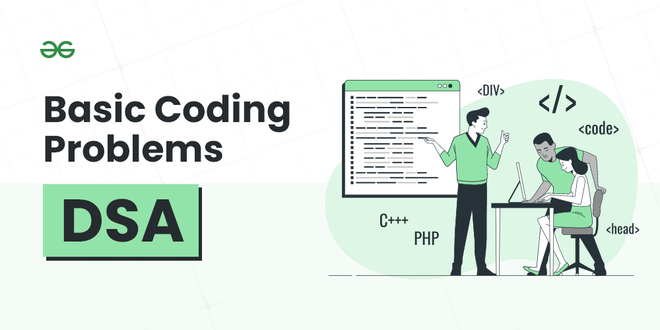

For any beginner looking to strengthen their skills in Data structures and algorithms (DSA), we have brought to you a collection of basic coding problems. These carefully selected problems will provide a solid foundation in fundamental concepts, helping beginners enhance their logical thinking and problem-solving abilities.
Below is the list of Basic Coding Problems designed for Beginners:
"The DSA course helped me a lot in clearing the interview rounds. It was really very helpful in setting a strong foundation for my problem-solving skills. Really a great investment, the passion Sandeep sir has towards DSA/teaching is what made the huge difference." - Gaurav | Placed at Amazon
Before you move on to the world of development, master the fundamentals of DSA on which every advanced algorithm is built upon. Choose your preferred language and start learning today:
Trusted by Millions, Taught by One- Join the best DSA Course Today!